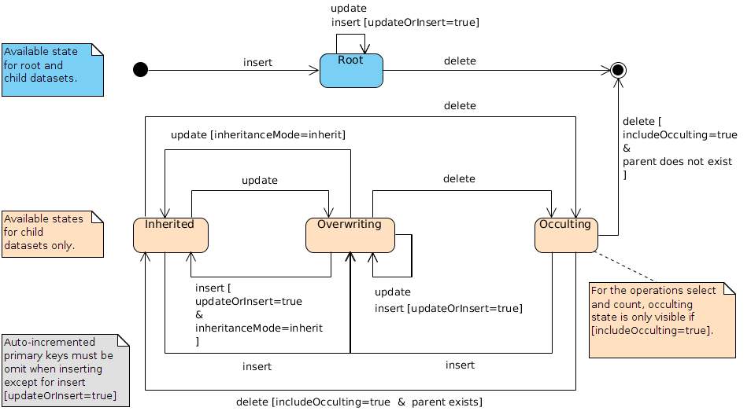

The architecture used is called ROA (Resource-Oriented Architecture), it can be an alternative to SOA (Service-Oriented Architecture). The chosen resources are readable and/or writable by third-party systems, according to the request content.
The HATEOAS approach of the built-in RESTful services also allows to experience an intuitive and straightforward navigation, which implies that the data details could be obtained through a link.
All operations are stateless.
This chapter describes the elements to use in order to build a conform REST request, such as: the HTTP method, the URL format, the header fields and the message body.
Considered HTTP methods for built-in RESTful services, are:
GET: used to select master data defined in the URL (the URL size limit depends on the application server or on the browser, that must be lower than or equal to 2KB).
POST: used to insert one or more records in a table or to select the master data defined in the URL (the size limit is 2MB or more depending on the application server. Each parameter is limited to a value containing 1024 characters).
PUT: used to update the master data defined in the URL.
DELETE: used to delete either the record defined in the URL or multiple records defined with the table URL and the record table in the message body.
REST URL contains:
http[s]://<host>[:<port>]/<ebx-dataservices>/rest/{category}/{categoryVersion}/{specificPath}[:{extendedAction}]?{queryParameters}
Where:
<ebx-dataservices> corresponds to the 'ebx-dataservices.war' web application's path. The path is composed by multiple, or none, URI segments followed by the web application's name.
{category} corresponds to the operation category.
{categoryVersion} corresponds to the category version: current value is v1.
{specificPath} corresponds to a specific path inside the category.
{extendedAction} corresponds to the extended action name (optional).
{queryParameters} corresponds to common or dedicated operation parameters passed by the URL.
It specializes the operation, it is added in the path of the URL in {category} and it takes one of the following values:
| Manage token authentication method. See Token authentication operations and Token Authentication Scheme for more information. |
| Lists dataset content, requests a table, a record or a field record content, including modified operations on dataset node, table, record and record field. A compact format is available to ease interaction for simple use cases. Manages dataspace and snapshot life cycle. See Data operations, Beta feature: Dataspace operations and Compact format limitations for more information. |
| Validates incoming data and returns a report before inserting or updating a dataset node, record or record field. A compact format is available to ease interaction for simple use cases. See Form data operations and Compact format limitations for more information. |
| Lists history dataset content, requests a history table, a history of a record or a history record. See Data operations for more information. |
| Generates the OpenAPI document of the selected resource. See OpenAPI operations for more information. |
These header field definitions are used by TIBCO EBX®.
| Used to specify content types by order of preference to be used in the response, the first supported one will be chosen and specified in the response header
|
| Used for specifying the preferred locale for the response. The supported locales are defined in the schema model. If none of the preferred locale are supported, the default locale for the current model is used. |
| Used for 'Basic Authentication Scheme' and 'Token Authentication Scheme' methods, otherwise the request is rejected. See also |
| Used to specify the request body media type. The supported types are |
| If present and in case of authentication failure, prevents the addition of the See also |
See RFC2616 for more information about HTTP Header Field Definitions.
These optional parameters are available for all data service operations.
Parameter | Description |
|---|---|
| Specifies if the response should be indented, to be easier to read for a human.
|
It contains the request data using the JSON format, see Extended JSON request body and Compact JSON request body .
Requests may define a message body only when using POST or PUT HTTP methods.
This chapter describes the responses returned by built-in RESTful services.
See Exception handling for details on standard error handling (where the HTTP code is greater than or equal to 300).
These header field definitions are used by EBX®.
| Indicates the locale used in the response for labels and descriptions. |
| Indicates the response body content type. |
| If a new record has been successfully inserted, the query URL for this record is returned by this field. |
| This header field is added to the HTTP response when authentication fails with the 401 (Unauthorized) HTTP code. Its value consists of a list with at least one authentication method applicable to the request URI. It is present if and only if the following conditions are verified:
If the client is able to interpret the authentication method, it is possible to resubmit the request providing the appropriate credentials. |
HTTP code | Description |
|---|---|
| The request has been successfully handled. |
| A new record has been created, in this case, the header field |
| The request has been successfully handled but no response body is returned. |
| The request URL or body is not well-formed or contains invalid content. |
| Authentication has failed. |
| Permission was denied to read or modify the specified resource for the authenticated user. This error is also returned when the user:
|
| The resource specified in the URL cannot be found. |
| Content type defined in the request's |
| A concurrent modification has occurred. See also |
| The request content is not supported, the request header value |
| The new resource's content cannot be accepted for semantic reasons. |
| Unexpected error thrown by the application. Error details can usually be found in EBX® logs. |
The response body content's format depends on the HTTP code value:
HTTP codes from 200 included to 300 excluded: the content format depends on the associated request (Extended JSON and Compact JSON samples).
With the exception of code 204 (No content).
HTTP codes greater than or equal to 300: the content describes the error. See JSON for details on the format.
These operations allow to create or revoke an authentication token. Authentication tokens have a timeout period. If a token is not used to access the EBX® server within this period, it will automatically be revoked. This timeout period is refreshed on each access to EBX® server.
This operation requires using the POST HTTP method with a request containing the user's credentials and, optionally, session parameters.
URL format is:
http[s]://<host>[:<port>]/<ebx-dataservices>/rest/auth/v1/token:create
A message body must be defined in the HTTP request. It necessarily contains one of the following set of data:
A login and a password value. Both JSON attributes are mandatory and of String types.
The specific JSON attribute set to true. When activated, this flag allows to performed a user authentication against the whole HTTP request. Warning, even if login and password attributes are defined in the JSON request's body, setting specific to true lead to a specific user authentication.
See the JSON examples of a token creation request.
HTTP code | Description |
|---|---|
| The token was successfully created. |
| For one of the following reasons:
|
| For one of the following reasons:
|
| For one of the following reasons:
|
If the HTTP code is 200 (OK), the body holds the token value and its type.
See the JSON example of a token creation response.
The token can later be used to authenticate a user by setting the HTTP-Header Authorization accordingly.
This operation modifies the password of an existing user account. It can be used in an authenticated context: login parameter, if present, is checked against the current session or taken from it, if absent. It could also be used in an unauthenticated context, for example when the Create token operation aborts with the HTTP code 422 (Unprocessable entity) with reason: PasswordMustChange.
It requires the use of:
the EBX® default directory
the POST HTTP method
the message body containing the structure specified below
URL format is:
http[s]://<host>[:<port>]/<ebx-dataservices>/rest/auth/v1/user:changePassword
The message body must be defined in the request. It necessarily contains a password and a passwordNew, the login is optional (all are String).
See the JSON example of a password change and token creation request.
HTTP code | Description |
|---|---|
| The password has been changed. |
| For one of the following reasons:
|
| For the following reason:
|
| For one of the following reasons:
|
If HTTP code 204 (No content) is returned, then the password has been modified.
This operation requires using the POST HTTP method. No message body is needed.
URL format is:
http[s]://<host>[:<port>]/<ebx-dataservices>/rest/auth/v1/token:revoke
| This field is required, > Authorization: <tokenType> <accessToken> |
HTTP code | Description |
|---|---|
| The token has been revoked successfully. |
| For one of the following reasons:
|
| Authentication has failed. |
The data category operations concern the datasets, the dataset fields, tables, records or record fields.
The data-compact category operations concern the dataset fields, tables, records or record fields.
The history category operations concern historized content from datasets, tables, records or record fields.
The form-data category operations concern the dataset fields, records or record fields when constraints must remain valid on content creation or update.
The form-data-compact category operations concern the dataset fields, records or record fields when constraints must remain valid on content creation or update.
See Form data operations for more information.
Select operation returns hierarchical content. This operation may use one of the following methods:
GET HTTP method,
POST HTTP method without message body or
POST HTTP method with a message body, with :select URL extended action and optionally session parameters.
URL formats are:
Dataset tree, depending on operation category:
The data category returns the hierarchy of the selected dataset, this includes group and table nodes.
The history category returns the hierarchy of the selected history dataset, this includes the pruned groups for history table nodes only.
http[s]://<host>[:<port>]/<ebx-dataservices>/rest/{category}/v1/{dataspace}/{dataset}[:select]
Terminal nodes and sub-nodes are not included.
Dataset node: the data or data-compact category returns the terminal nodes contained in the selected node.
http[s]://<host>[:<port>]/<ebx-dataservices>/rest/{category}/v1/{dataspace}/{dataset}/{pathInDataset}[:select]
Not applicable with the history category.
Table, depending on operation category:
the data or data-compact category returns the table content and/or metadata, current page records and URLs for pagination.
The history category returns the history table content and/or metadata, current page records and URLs for pagination.
http[s]://<host>[:<port>]/<ebx-dataservices>/rest/{category}/v1/{dataspace}/{dataset}/{pathInDataset}[:select]
Record, depending on operation category:
the data or data-compact category returns the record content and/or metadata.
The history category returns history record content and/or metadata.
http[s]://<host>[:<port>]/<ebx-dataservices>/rest/{category}/v1/{dataspace}/{dataset}/{pathInDataset}/{encodedPrimaryKey}[:select]
http[s]://<host>[:<port>]/<ebx-dataservices>/rest/{category}/v1/{dataspace}/{dataset}/{pathInDataset}[:select]?primaryKey={xpathExpression}
The record access by the primary key (primaryKey parameter) is limited to its root node. It is recommended to use the encoded primary key, available in the details field in order to override this limitation. Similarly, for a history record, use the encoded primary key, available in the historyDetails field.
Field, depending on operation category:
the data or data-compact category returns the field record content where structure depends on its type.
The history category returns the field history record content where structure depends on its type.
http[s]://<host>[:<port>]/<ebx-dataservices>/rest/{category}/v1/{dataspace}/{dataset}/{pathInDataset}/{encodedPrimaryKey}/{pathInRecord}[:select]
The field must be either an association node, a selection node, a terminal node or above.
Where:
{category} corresponds to the operation category (possible values are: data or data-compact).
{dataspace} corresponds to B followed by the dataspace identifier or to V followed by the snapshot identifier.
{dataset} corresponds to the dataset identifier.
{pathInDataset} corresponds to the path of the dataset node, that can be a group node or a table node.
{encodedPrimaryKey} corresponds to the encoded representation of the primary key.
{xpathExpression} corresponds to the record primary key, using the XPath expression.
{pathInRecord} corresponds to the path starting from the table node.
:select extended action is required when POST HTTP method is used with a body message.
The following parameters are applicable to the select operation.
Parameter | Description |
|---|---|
| Includes the
|
| Includes the Type See also |
| Includes those fields for a historized content:
NoteThe See also |
| Includes the Possible values are:
NoteThe |
| Includes the
See also |
| Includes the OpenAPI specification URL for each describable node. Type Note This query parameter is ignored if the includeDetails one is set to See also |
| Includes the Type See also |
| Includes the The sort criteria parameters are added by using:
Example JSON |
| Includes the internal technical data.
NoteThis parameter is ignored with the See also |
| Includes the validation report corresponding to the selection.
NoteThis parameter is ignored with the See also |
The following parameters are applicable to tables, associations and selection nodes.
Parameter | Description |
|---|---|
| Quick search predicate or complete XPath predicate expression defines the field values to which the request is applied. If empty, all records will be retrieved.
NoteThe history code operation value is usable with See also |
| Specifies the filter context applied on table.
The default value is See alsoNoteThis parameter is ignored with the |
| Includes the records in occulting mode.
See also |
| Search a record by a primary key, using the XPath expression. The XPath predicate expression should only contain field(s) of the primary key and all of them. Fields are separated by the operator
Example with a composed primary key: The response will only contain the corresponding record, otherwise an error is returned. Consequently, the other table parameters are ignored (as filter, viewPublication, sort, etc.)
|
| Deprecated since version 5.9.0, replaced by |
| Specifies a server side built filter, for pagination, pointing to a record. This filter is strongly linked to the
See also |
| Specifies the pagination action to perform from the identifier held by
|
| Specifies the number of records per page.
|
| Specifies that the operation result will be sorted according to the specified criteria. The criteria are composed of one or more criterion, the result will be sorted by priority from the left. A criterion is composed of the field path and, optionally, the sorting order (ascending or descending, on value or on label). This parameter can be combined with:
The value structure is as follows:
Where:
NoteThe history code operation value is usable with the NoteThis parameter is ignored when the sort by relevancy is activated. |
| Specifies that the operation result will be sorted by relevancy, only if this condition is fulfill:
If the sort by relevancy is activated, the following parameters are ignored: sort, sortOnLabel, sortPriority and sort criteria defined through the viewPublication. |
| Specifies that the operation result will be sorted according to the record label. This parameter can be combined with:
The value structure is as follows:
Where:
NoteThis parameter is ignored when the sort by relevancy is activated. |
| Overrides the default priority of sort groups:
Comma separated NoteThis parameter is ignored when the sort by relevancy is activated. |
| Specifies the name of the published view. This parameter can be combined with:
The behavior of this parameter is described in the section .
NoteThe sort criteria, defined through this parameter, is ignored when the sort by relevancy is activated. See also |
The following parameters are only applicable to fields that return an enumeration, foreign key or osd:resource (Example JSON). By default, a pagination mechanism is always enabled. Some selector's select operations require input values. Thus, the uses of POST HTTP method message body allows to provide a record content.
Parameter | Description |
|---|---|
| Specifies whether:
NoteThis parameter is ignored with the |
| Specifies the index of the first element returned by the selector. Must be an integer higher than or equal to
|
| Specifies the number of elements per page.
|
| Specifies the filter of the selector.
|
HTTP code | Description |
|---|---|
| The selected resource is successfully retrieved. |
| The request is incorrect. This occurs when:
|
| The selected resource is hidden for the authenticated user. |
| The selected resource is not found. |
After a successful dataset, table, record or field selection, the result is returned in the response body. The content depends on the provided parameters and selected data.
Examples: Extended JSON, Compact JSON.
Prepare for creation or duplication operations are used to create a new transient record with an initial content or with the content of a record to duplicate. A transient record corresponds to a content that is not persisted yet. Default values and fields, initialized by table triggers, are considered. Only field values with, at least, read-only access permissions are returned. These operations can optionally return metadata to improve and assist data capture on the client side. Auto-incremented fields are only returned in the metadata. By enabling the selector parameter, a transient record's field can be queried to the retrieve possible values of an enumerated field, a foreign key, etc. Furthermore, selector's select operations allows to provide input record data to manage use cases like getting metadata on a custom programmatic enumeration, etc.
After being modified on the client side, the record can be submitted to be persisted using the built-in Form insert operation or Insert operation operations.
These prepare operations may use one of the following methods:
GET HTTP method,
POST HTTP method without message body or
POST HTTP method with a message body and optionally session parameters.
Available URL formats are:
Prepare for creation
Record:
http[s]://<host>[:<port>]/ebx-dataservices/rest/{category}/v1/{dataspace}/{dataset}/{tablePath}:prepareForCreation
Record field:
http[s]://<host>[:<port>]/ebx-dataservices/rest/{category}/v1/{dataspace}/{dataset}/{tablePath}:prepareForCreation/{pathInRecord}
Prepare for duplication
Record:
http[s]://<host>[:<port>]/ebx-dataservices/rest/{category}/v1/{dataspace}/{dataset}/{tablePath}/{encodedPrimaryKey}:prepareForDuplication
Record field:
http[s]://<host>[:<port>]/ebx-dataservices/rest/{category}/v1/{dataspace}/{dataset}/{tablePath}/{encodedPrimaryKey}:prepareForDuplication/{pathInRecord}
Where:
{category} corresponds to the operation category (possible values are: data or data-compact).
{dataspace} corresponds to B followed by the dataspace identifier.
{dataset} corresponds to the dataset identifier.
{tablePath} corresponds to the table path node.
{encodedPrimaryKey} corresponds to the encoded representation of the primary key.
{pathInRecord} corresponds to the path starting from the table node.
The following parameters are applicable to the prepare operations:
Parameter | Description |
|---|---|
| Includes the Type See also |
| Includes the
See also |
| Includes the Type See also |
The available parameters are similar to the selector operation ones.
HTTP code | Description |
|---|---|
| The selected resource has been successfully retrieved. |
| The request is incorrect. This occurs when:
|
| Authentication has failed. |
| The selected resource is hidden from the authenticated user. |
| The selected resource could not be found. |
After a successful prepare for a creation or duplication request, the transient record is returned in the response body. The content depends on the provided parameters and selected data. However, it takes a format similar to the select operation record.
Examples: Extended JSON, Compact JSON.
Insert operation uses the POST HTTP method. A body message is required to specify data. This operation supports the insertion of one or more records in a single transaction. Moreover, it is also possible to update record(s) through parameterization.
Record: insert a new record or modify an existing one in the selected table.
Record table: insert or modify one or more records in the selected table, while securing a consistent answer. Operations are executed sequentially, in the order defined on the client side. When an error occurs during a table operation, all updates are cancelled and the client receives an error message with detailed information.
http[s]://<host>[:<port>]/<ebx-dataservices>/rest/{category}/v1/{dataspace}/{dataset}/{pathInDataset}
Where:
{category} corresponds to the operation category (possible values are: data or data-compact).
{dataspace} corresponds to B followed by the dataspace identifier or to V followed by the snapshot identifier.
{dataset} corresponds to the dataset identifier.
{pathInDataset} corresponds to the path of the table node.
The following parameters are applicable with the insert operation.
Parameter | Description |
|---|---|
| Includes the Type NoteOnly applicable on the record table. |
| Includes the
NoteOnly applicable on the record table. |
| Includes the Possible values are:
NoteOnly applicable on the record table. |
| Specifies the behavior when the record to insert already exists:
|
| Specifies whether blocking constraints are ignored, if so, the operation is committed regardless of the validation error created, otherwise, the operation would be aborted.
|
The request must define a message body. The format depends on the inserted object type:
Record: similar to the select operation of a record but without the record's header (example Extended JSON, Compact JSON).
Record table: Similar to the select operation on a table but without the pagination information (example Extended JSON, Compact JSON).
HTTP code | Description |
|---|---|
| If the request relates to a record table. The insert request was applied successfully, an optional report is returned in the response body. |
| If the request relates to a record. A new record has been created, in this case, the header field |
| If the request relates to a record. Only available if |
| The request is incorrect. This occurs when the body message structure does not comply with what was mentioned in Message body. |
| Authenticated user is not allowed to create a record or the request body contains a read-only field. |
| The selected resource is not found. |
| Concurrent modification, only available if |
| The request cannot be processed. This occurs when:
|
The response body format depends on the inserted object type:
Record: is empty if the operation was executed successfully. The header field Location is returned with its URL resource.
Record table: (optional) contains a table of element(s), corresponding to the insert operation report (example JSON). This report is automatically included in the response body, if at least one of the following options is set:
includeForeignKey
includeLabel
includeDetails
This operation allows the modification of a single dataset or record. The PUT HTTP method must be used. Available URL formats are:
Dataset node: modifies the values of terminal nodes contained in the selected node.
http[s]://<host>[:<port>]/<ebx-dataservices>/rest/{category}/v1/{dataspace}/{dataset}/{pathInDataset}
Record: modifies the content of selected record.
http[s]://<host>[:<port>]/ebx-dataservices/rest/{category}/v1/{dataspace}/{dataset}/{pathInDataset}/{encodedPrimaryKey}
Also available for POST HTTP method. In this case, the URL must point to the table and the parameter updateOrInsert must be set to true.
Field: update of a single field of the selected record.
http[s]://<host>[:<port>]/<ebx-dataservices>/rest/{category}/v1/{dataspace}/{dataset}/{pathInDataset}/{encodedPrimaryKey}/{pathInRecord}
The field must be either a terminal node or above.
Where:
{category} corresponds to the operation category (possible values are: data or data-compact).
{dataspace} corresponds to B followed by the dataspace identifier or to V followed by the snapshot identifier.
{dataset} corresponds to the dataset identifier.
{pathInDataset} corresponds to the path of the dataset node:
For dataset node operations, this must be any terminal node or above except table node,
For record and field operations, this corresponds to the table node.
{encodedPrimaryKey} corresponds to the encoded representation of the primary key.
{pathInRecord} corresponds to the path starting from the table node.
Here are the parameters applicable with the update operation.
Parameter | Description |
|---|---|
| Specifies whether blocking constraints are ignored, if so, the operation is committed regardless of the validation error created, otherwise, the operation would be aborted.
|
| Specifies the behavior for setting value of nodes that are not defined in the request body. This is described in the Update modes section.
|
| Timestamp in datetime format used to ensure that the record has not been modified since the last read. Also see the Optimistic locking section.
|
The request must define a message body.
The structure is the same as for:
the dataset node (sample Extended JSON, Compact JSON),
the record (sample Extended JSON, Compact JSON),
the record fields (sample Extended JSON, Compact JSON),
depending on the updated scope, by only keeping the content entry.
HTTP code | Description |
|---|---|
| The record, field or dataset node has been successfully updated. |
| The request is incorrect. This occurs when the body request structure does not comply. |
| Authenticated user is not allowed to update the specified resource or the request body contains a read-only field. |
| The selected resource is not found. |
| Concurrent modification, the Optimistic locking is activated and the content has changed in the meantime, it must be reloaded before the update. |
| The request cannot be processed. This occurs when:
|
The operation uses the DELETE HTTP method.
Two URL formats are available:
Record: delete a record specified in the URL.
http[s]://<host>[:<port>]/<ebx-dataservices>/rest/data/v1/{dataspace}/{dataset}/{pathInDataset}/{encodedPrimaryKey}
Record table: deletes several records in the specified table, while providing a consistent answer. This mode requires a body message containing a record table. The deletions are executed sequentially, according to the order defined in the table. When an error occurs during a table operation, all deletions are cancelled and an error message is displayed with detailed information.
http[s]://<host>[:<port>]/<ebx-dataservices>/rest/data/v1/{dataspace}/{dataset}/{pathInDataset}
Where:
{dataspace} corresponds to B followed by the dataspace identifier or to V followed by the snapshot identifier.
{dataset} corresponds to the dataset identifier.
{pathInDataset} corresponds to the path of the table node.
{encodedPrimaryKey} corresponds to the encoded representation of the primary key.
In a child dataset context, this operation modifies the inheritanceMode property value of the record as follows:
A record with inheritance mode set to inherit or overwrite becomes occult.
A record with inheritance mode set to occult becomes inherit if the inheritIfInOccultingMode operation parameter is set to true or is undefined, otherwise there is no change.
A record with inheritance mode set to root is simply deleted.
Here are the following parameters applicable with delete operation.
Parameter | Description |
|---|---|
| Includes occulted records.
|
| Deprecated since version 5.8.1 While it remains available for backward compatibility reasons, it will eventually be removed in a future version. Inherits the record if it is in occulting mode.
|
| Timestamp in datetime format used to ensure that the record has not been modified since the last read. Also see the Optimistic locking section.
|
| Specifies whether blocking constraints are ignored, if so, the operation is committed regardless of the validation error created, otherwise, the operation would be aborted.
|
The request must define a message body only when deleting several records:
Record table: The message contains a table of elements related to a record, with for each element one of the following properties:
details: corresponds to the record URL, it is returned by the select operation.
primaryKey: corresponds to the primary key of the record, using the XPath expression.
foreignKey: corresponds to the value that a foreign key would have if it referred to a record.
Examples: Extended JSON, Compact JSON.
HTTP code | Description |
|---|---|
| The operation has been executed successfully. A report is returned in the response body. |
| The request is incorrect. This occurs when:
|
| Authenticated user is not allowed to delete or occult the specified record. |
| The selected record is not found. In the child dataset context, it should be necessary to use the |
| Concurrent modification, The Optimistic locking is activated and the content has changed in the meantime, it must be reloaded before deleting the record. The parameter value |
| Only available if |
After a successful record deletion or occulting, a report is returned in the response body. It contains the number of deleted, occulted and inherited record(s).
Example JSON.
Count operation may use one of the following methods:
GET HTTP method,
POST HTTP method without message body or
POST HTTP method with message body but without content field on root.
The URL formats are:
Dataset node: the data category returns the number of terminal nodes contained in the selected node.
http[s]://<host>[:<port>]/<ebx-dataservices>/rest/{category}/v1/{dataspace}/{dataset}/{pathInDataset}:count
Not applicable with the history category.
Table depending on the operation category:
the data category returns the number of table records.
The history category returns the number of table history records.
http[s]://<host>[:<port>]/<ebx-dataservices>/rest/{category}/v1/{dataspace}/{dataset}/{pathInDataset}:count
Field depending on the operation category:
the data category counts the record fields.
The history category counts the history record field.
http[s]://<host>[:<port>]/<ebx-dataservices>/rest/{category}/v1/{dataspace}/{dataset}/{pathInDataset}/{encodedPrimaryKey}/{pathInRecord}:count
The field must be either an association node, a selection node, a terminal node or above.
Where:
{category} corresponds to the operation category (possible values are: data or data-compact).
{dataspace} corresponds to B followed by the dataspace identifier or to V followed by the snapshot identifier.
{dataset} corresponds to the dataset identifier.
{pathInDataset} corresponds to the path of the dataset node, that can be a group node or a table node.
{encodedPrimaryKey} corresponds to the encoded representation of the primary key.
{pathInRecord} corresponds to the path starting from the table node.
The following parameters are applicable to the count operation.
Parameter | Description |
|---|---|
| This parameter is deprecated since 6.0.0 and has been replaced by the extended action from the URL. It is used to specify whether this is a count operation or a selection operation.
|
The following parameters are applicable to tables, associations and selection nodes.
Parameter | Description |
|---|---|
| XPath predicate expression defines the field values to which the request is applied. If empty, all records will be considered.
NoteThe history code operation value is usable with the |
| Specifies the filter context applied on table.
The default value is See alsoNoteThis parameter is ignored with the |
| Includes the records in occulting mode.
|
| Specifies the name of the published view to be considered during the count execution. This parameter can be combined with:
The behavior of this parameter is described in the section . |
The following parameters are only applicable to fields that return an enumeration, foreign key or osd:resource.
Parameter | Description |
|---|---|
| Specifies whether:
NoteThis parameter is ignored with the |
| Specifies the filter of the selector.
|
HTTP code | Description |
|---|---|
| The selected resource is successfully counted. |
| The request is incorrect. This occurs when:
|
| The selected resource is hidden for the authenticated user. |
| The selected resource is not found. |
To prevent an update or a delete operation on a record that was previously read but may have changed in the meantime, an optimistic locking mechanism is provided.
To enable optimistic locking, a select request must set the parameter includeTechnicals to true.
See Technical data for more information.
The value of the lastUpdateDate property must be included in the following update request. If the record has been changed since the specified time, the update or delete will be cancelled.
Record: update whole or partial content of the selected record.
The property lastUpdateDate should be added to the request body to prevent update of a modified record.
See the JSON example of a record.
Field: update of a single field of the selected record.
The property value lastUpdateDate must be declared in the request URL by the checkNotChangedSinceLastUpdateDate parameter to prevent the update of a modified record.
The property value lastUpdateDate can also be used in the request URL checkNotChangedSinceLastUpdateDate parameter to prevent deletion on a modified record.
The checkNotChangedSinceLastUpdateDate parameter may be used more than once but only on the same record. This implies that if the request URL returns more than one record, the request will fail.
EBX® inheritance features are supported by built-in RESTful services using specific properties and automatic behaviors. In most cases, the inheritance state will be automatically computed by the server according to the record and field definition or content. Every action that modifies a record or a field may have an indirect impact on those states. In order to fully handle the inheritance life cycle, direct modifications of the state are allowed under certain conditions. Forbidden or incoherent explicit alteration attempts are ignored.

The following table describes properties related to the EBX® inheritance features.
Property | Location | Description |
|---|---|---|
| record or table metadata | Specifies if dataset inheritance is activated for the table. The value is computed from the data model and cannot be modified through built-in RESTful services. See also |
| field metadata | Specifies the field's value source. The source data are directly taken from the data model and cannot be modified through built-in RESTful services. See also |
| record in child dataset | Specifies the record's inheritance state. To set a record's inheritance from Note Inherited record's fields are necessarily Note Root records in child dataset will always be Possible values are: |
field in | Specifies the field's inheritance state. To set a field's inheritance to Note
Note
Possible values are: | |
| inherited field | Specifies the inherited field's inheritance state. To set a field's inheritance to Note
Note
Possible values are: |
The "look up published views" operation may use one of the following methods:
GET HTTP method or
POST HTTP method without message body.
The URL format is:
http[s]://<host>[:<port>]/<ebx-dataservices>/rest/data/v1/{dataspace}/{dataset}/{tablePath: [^:]*}:publishedViews
Where:
{dataspace} corresponds to B followed by the dataspace identifier or to V followed by the image identifier.
{dataset} corresponds to the dataset identifier.
{tablePath: [^:]*} corresponds to the table path.
No specific parameter for this operation.
HTTP code | Description |
|---|---|
| Information successfully returned. |
| Incorrect request, contains an error. |
| Authentication has failed. |
| The specified resource read permission has been denied to the authenticated user. |
| The selected resource cannot be found. |
It contains a collection of authorized view information (including the access URI).
Example: JSON.
The form-data category operations concern the dataset fields, records or record fields when creating or modifying content must comply with constraints on user form submit. They are intended to be used in a user form management context.
The request body of an operation is very similar to the equivalent operation of the data category in the sens that an incoming data validation feature and a result report has been added to the response. The data validation can not be deactivated, a parameter blockingConstraintsDisabled from the data category operations is not applicable. The validation phase fails when, at least, one constraint with a blocksCommit level set to onInsertUpdateOrDelete or onUserSubmit-checkModifiedValues is violated.
Insert form uses the POST HTTP method and requires a message body holding the data. This operation supports one or multiple records in a single transaction. Moreover, it is also possible to update record(s).
Record: validate and insert a new record or modify an existing one in the selected table.
Record table: validate and insert or modify one or more records in the selected table, while securing a consistent response. Operations are executed sequentially, in the order defined on the client side. When an error occurs during a table operation, all updates are cancelled and the client receives an error message with detailed information. The maximum number of records is limited to 100.
http[s]://<host>[:<port>]/ebx-dataservices/rest/{category}/v1/{dataspace}/{dataset}/{pathInDataset}
Where:
{category} corresponds to the operation category (possible values are: form-data or form-data-compact).
{dataspace} corresponds to B followed by the dataspace identifier or to V followed by the snapshot identifier.
{dataset} corresponds to the dataset identifier.
{pathInDataset} corresponds to the path of the table node.
The following parameters are applicable with this insert operation.
Parameter | Description |
|---|---|
| Includes the Type NoteOnly applicable for a multiple records insertion. |
| Includes the
NoteOnly applicable for a multiple records insertion. |
| Includes the Possible values are:
NoteOnly applicable for a multiple records insertion. |
| Specifies the behavior when the record to insert already exists:
|
The request must define a message body. The format is similar to the data category insert operation's message body.
HTTP code | Description |
|---|---|
|
|
| The request body holds only one non-existing record: a new record has been created and the header field |
| The request is incorrect. This occurs when the body message structure:
|
| Authenticated user is not allowed to create a record or the request body contains a read-only field. |
| The selected resource is not found. |
| Concurrent modification, only available if |
| The request cannot be processed. This occurs when:
|
The response body will always hold a validation report. However in case of failure, the response body corresponds to a JSON Exception handling response.
Record: The header field Location is returned with its URL resource. The validation report will be include in response body.
Record table: (optional) Contains a list of validations report for each element, corresponding to the multiple validation report.
As for the data or data-compact category update operation, it allows the modification of a single dataset or record and the PUT HTTP method must be used. Available URL formats are:
Dataset node: validates and modifies the values of terminal nodes contained in the selected node.
http[s]://<host>[:<port>]/ebx-dataservices/rest/{category}/v1/{dataspace}/{dataset}/{pathInDataset}
Record: validates and modifies the content of the selected record.
http[s]://<host>[:<port>]/ebx-dataservices/rest/{category}/v1/{dataspace}/{dataset}/{pathInDataset}/{encodedPrimaryKey}
Also available for POST HTTP method. In this case, the URL must point to the table and the parameter updateOrInsert must be set to true.
Field: validates and update of a single field of the selected record.
http[s]://<host>[:<port>]/ebx-dataservices/rest/{category}/v1/{dataspace}/{dataset}/{pathInDataset}/{encodedPrimaryKey}/{pathInRecord}
The field must be either a terminal node or above.
Where:
{category} corresponds to the operation category (possible values are: form-data or form-data-compact).
{dataspace} corresponds to B followed by the dataspace identifier or to V followed by the snapshot identifier.
{dataset} corresponds to the dataset identifier.
{pathInDataset} corresponds to the path of the dataset node:
for dataset node operations, this must be any terminal node or above except table node,
for record and field operations, this corresponds to the table node.
{encodedPrimaryKey} corresponds to the encoded representation of the record primary key.
{pathInRecord} corresponds to the path starting from the table node.
Here are the parameters applicable with the update operation.
Parameter | Description |
|---|---|
| Specifies the behavior for setting value of nodes that are not defined in the request body. This is described in the Update modes section.
|
| Timestamp in datetime format used to ensure that the record has not been modified since the last read. Also see the Optimistic locking section.
|
The request must define a message body. The format is the same as for the data category update operation message body.
HTTP code | Description |
|---|---|
| The update request was applied successful and a report is returned in the response body. |
| The request is incorrect. This occurs when the body request structure does not comply. |
| Authenticated user is not allowed to update the specified resource or the request body contains a read-only field. |
| The selected resource is not found. |
| Concurrent modification, the Optimistic locking is activated and the content has changed in the meantime, it must be reloaded before the update. |
| The request cannot be processed. This occurs when:
|
The response body has the same format and behavior as the Form Insert operation.
These operations perform a selection or life cycle management over dataspaces.
Select operation may use one of the following methods: GET or POST. A pagination mechanism is always enabled.
URL formats are:
Root: returns root dataspaces
http[s]://<host>[:<port>]/ebx-dataservices/rest/data/v1/
Children: returns children dataspaces of a given dataspace
http[s]://<host>[:<port>]/ebx-dataservices/rest/data/v1/{dataspace}:children
Snapshots: returns snapshots of a given dataspace
http[s]://<host>[:<port>]/ebx-dataservices/rest/data/v1/{dataspace}:snapshots
Information: returns a dataspace, or a snapshot, information
http[s]://<host>[:<port>]/ebx-dataservices/rest/data/v1/{dataspace}:information
Where:
{dataspace} corresponds to B followed by the dataspace's identifier or to V followed by the snapshot's identifier.
The following query parameters are applicable to Root, Children and Snapshots operations.
Parameter | Description |
|---|---|
| Includes the closed dataspaces to the selection.
|
| Includes the administration dataspaces to the selection.
|
| Specifies a server side built filter, for pagination, pointing to a record. This filter is strongly linked to the
See also |
| Specifies the pagination action to perform from the identifier held by
|
| Specifies the maximum number of records per page.
|
HTTP code | Description |
|---|---|
| The request has been successfully handled. |
| The request is incorrect. This occurs when:
|
| Authentication has failed. |
| The selected resource is hidden from the authenticated user. |
| The selected resource could not be found. |
After a successful selection, the result is returned in the response body. The content depends on the provided parameters and selected data.
The format is linked to the selected object type:
Creates the dataspace or snapshot as specified. This operation use the POST method with a body request (with no specific query parameter).
URL format are:
Dataspace:
http[s]://<host>[:<port>]/.../data/v1/{dataspace}:createDataspace
Snapshot:
http[s]://<host>[:<port>]/.../data/v1/{dataspace}:createSnapshot
Where:
{dataspace} corresponds to B followed by the dataspace identifier.
The body specifies the features of the dataspace or the snapshot to create.
See the JSON example.
HTTP code | Description |
|---|---|
| A new dataspace or snapshot has been created, in this case, the header field |
| The request body is not well-formed or contains invalid content. |
| Authentication has failed. |
| Permission was denied to create the specified resource for the authenticated user. |
| The resource specified in the request body cannot be found. |
| Unexpected error thrown by the application. Error details can usually be found in EBX® logs. |
Locks the specified dataspace. If the dataspace is already locked:
by the same user, then the lock is kept,
by another user and during the wait duration, then the lock is acquired,
otherwise, the lock is rejected.
This operation uses the POST method and consumes Content-Type header set to:
application/x-www-form-urlencoded: with HTTP parameters in the body or
application/json: with HTTP parameters in the URL and Session parameters into JSON body.
When it succeeds, no response body is returned.
URL format is:
http[s]://<host>[:<port>]/.../data/v1/{dataspace}:lock
Where:
{dataspace} corresponds to B followed by the dataspace identifier.
The following query parameters are applicable to the operation.
Parameter | Description |
|---|---|
| When the dataspace is locked by another user, specifies the maximum duration to wait for acquiring the lock. The duration is specified in seconds. If the value is set to
|
HTTP code | Description |
|---|---|
| The request has been successfully handled but no response body is returned. |
| The request URL or body is not well-formed or contains invalid content. |
| Authentication has failed. |
| Permission was denied to lock the specified resource for the authenticated user. |
| The resource specified in the URL cannot be found. |
| The resource is already locked by another user, the lock is rejected after |
| Unexpected error thrown by the application. Error details can usually be found in EBX® logs. |
Unlocks the specified dataspace. If the dataspace is:
locked by the same user, then the lock is released,
locked by another user, the current user is an administrator, and the forceByAdministrator query parameter is set to true, then the lock is released,
not locked, the lock status is unchanged,
otherwise, the unlock is rejected.
This operation uses the POST method and consumes Content-Type header set to:
application/x-www-form-urlencoded: with HTTP parameters in the body or
application/json: with HTTP parameters in the URL and Session parameters into JSON body.
When it succeeds, no response body is returned.
URL format is:
http[s]://<host>[:<port>]/.../data/v1/{dataspace}:unlock
Where:
{dataspace} corresponds to B followed by the dataspace identifier.
The following query parameters are applicable to the operation.
Parameter | Description |
|---|---|
| When the dataspace is locked by another user, an administrator can force the unlocking.
|
HTTP code | Description |
|---|---|
| The request has been successfully handled but no response body is returned. |
| The request URL or body is not well-formed or contains invalid content. |
| Authentication has failed. |
| Permission was denied to unlock the specified resource for the authenticated user. |
| The resource specified in the URL cannot be found. |
| The resource is already locked by another user, or the current user is administrator but |
| Unexpected error thrown by the application. Error details can usually be found in EBX® logs. |
Merges the specified dataspace to its parent. It is possible to perform deletion, after the merge, on history and / or on data.
This operation uses the POST method and consumes Content-Type header set to:
application/x-www-form-urlencoded: with HTTP parameters in the body or
application/json: with HTTP parameters in the URL and Session parameters into JSON body.
When it succeeds, no response body is returned.
The merge decision step is bypassed for merges performed through data services. In such cases, the data in the child dataspace automatically overrides the data in its parent.
URL format is:
http[s]://<host>[:<port>]/.../data/v1/{dataspace}:merge
Where:
{dataspace} corresponds to B followed by the dataspace identifier.
The following query parameters are applicable to the operation.
Parameter | Description |
|---|---|
| Sets whether the history associated with the specified dataspace will be deleted upon merge.
|
| Sets whether the specified dataspace and its associated snapshots will be deleted upon merge.
|
HTTP code | Description |
|---|---|
| The request has been successfully handled but no response body is returned. |
| The request URL contains invalid content. |
| Authentication has failed. |
| Permission was denied to merge the specified resource for the authenticated user. |
| The resource specified in the URL cannot be found. |
| Unexpected error thrown by the application. Error details can usually be found in EBX® logs. |
Closes the specified dataspace or snapshot. It is possible to perform deletion, after close, on history and / or on data.
This operation uses the POST method and consumes Content-Type header set to:
application/x-www-form-urlencoded: with HTTP parameters in the body or
application/json: with HTTP parameters in the URL and Session parameters into JSON body.
When it succeeds, no response body is returned.
URL format is:
http[s]://<host>[:<port>]/.../data/v1/{dataspace}:close
Where:
{dataspace} corresponds to B followed by the dataspace identifier or to V followed by the snapshot identifier.
The following query parameters are applicable to the operation.
Parameter | Description |
|---|---|
| Sets whether the history associated with the specified dataspace will be deleted upon close.
|
| Sets whether the specified dataspace and its associated snapshots will be deleted upon close.
|
HTTP code | Description |
|---|---|
| The request has been successfully handled but no response body is returned. |
| The request URL or body is not well-formed or contains invalid content. |
| Authentication has failed. |
| Permission was denied to close the specified resource for the authenticated user. |
| The resource specified in the URL cannot be found. |
| A blocking constraint has been violated. |
| Unexpected error thrown by the application. Error details can usually be found in EBX® logs. |
The open-api category operations comply with the OpenAPI specification 3.0.X to generate JSON documents. These documents facilitate development and consumption by structuring and describing the available REST built-in resources and the operations associated with them.
OpenAPI document HATEOAS links are available through the select data operations when using the includeOpenApiDetails query parameter.
Making the proper types mapping for generating a client, in a specific language, is essential. The OpenAPI format can be used to validate the input or to map the value to a specific type, in the chosen programming language. See Content of simple type for more information.
Tools that do not support a specific format may default back to the type alone.
The operation uses the GET or POST HTTP method to generate the OpenAPI document of a dataset table or a schema node.
The URL format is:
http[s]://<host>[:<port>]/ebx-dataservices/rest/open-api/v1/{category}/v1/{dataspace}/{dataset}/{pathInDataset}
Where:
{category} corresponds to an operation category among data or form-data.
{dataspace} corresponds to B followed by the dataspace identifier or to V followed by the snapshot identifier.
{dataset} corresponds to the dataset identifier.
{pathInDataset} corresponds to the path of:
a table node,
a dataset terminal node or above.
The generated document will not depend on user permissions. The whole fields will be presented.
HTTP code | Description |
|---|---|
| The request has been successfully handled. |
| Authentication has failed. |
| Permission was denied to read the specified resource. |
| The resource, specified in the URL, cannot be found. |
Indexes, in the request URL {pathInDataset} or {pathInRecord}, are not supported.
Nested aggregated lists are not supported.
Dataset nodes and field operations applied to nodes that are sub-terminal are not supported.
Inheritance is not handled in the compact format. Use the extended one instead.
History category is not supported in the compact format.
Within the selector, the pagination context is limited to the nextPage property.
When the sortByRelevancy parameter is activated, the ones below are ignored: sort, sortOnLabel, sortPriority and sort criteria defined through the viewPublication.
Within the viewPublication parameter, the hierarchical view is not supported.
The prepare for creation operation does not support a dataset node.
The select dataspaces operation does not sort them by label.
The select snapshots operation does not sort them by creation date.
The select snapshots operation can not include the initial snapshots.
Association fields cannot be updated, therefore, the list of associated records cannot be modified directly.
Control policy onUserSubmit-checkModifiedValues of the user interface is not supported. To retrieve validation errors, invoke the select operation on the resource by including the includeValidation parameter.
Changing or resetting a password for a user is not supported.
The document generation is not available through the user interface.
The document generation REST services does not support the YAML format.
Supports only Data operations and Form data operations except:
Select Dataset tree, Dataset node and Field operations.
Insert or delete multiple records in a single request.
Use of the HTTP header content-type: x-www-form-urlencoded to send query parameters in the body request.
The 'Basic Authentication Scheme' is the only described method.
The document generation is not supported for custom REST toolkit services.